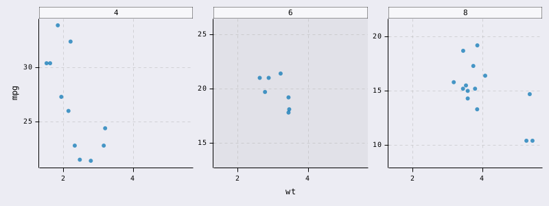
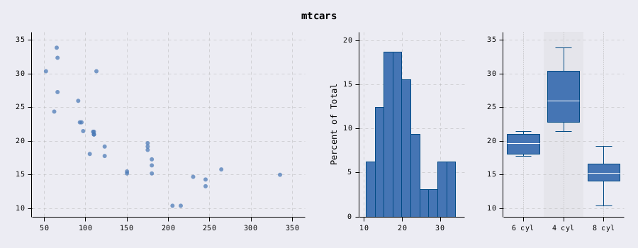

8 Facets, multiplots and margins
One plot can split into panels by data (facets), several plots can share one image (plot/arrange, plot/pairs, :custom-grid), and a panel can carry charts beside it (:margins).
(ns reference.facets-arrange
(:require [cljplot2.chart :as chart]
[cljplot2.core :as plot]
[cljplot2.data.facet :as facet]
[cljplot2.describe :as describe]
[cljplot2.layout.plot-grid :as plot-grid]
[cljplot2.pipeline :as pipeline]
[notebook-utils :as nu]))Data: Motor Trend car road tests (1974), R datasets package mtcars (Henderson & Velleman 1981); licence: Part of R (GPL-2 | GPL-3).
(def mtcars (nu/dataset :mtcars))| model | mpg | cyl | disp | hp | drat | wt | qsec | vs | am | gear | carb |
|---|---|---|---|---|---|---|---|---|---|---|---|
| Mazda RX4 | 21 | 6 | 160 | 110 | 3.9 | 2.62 | 16.46 | 0 | 1 | 4 | 4 |
| Mazda RX4 Wag | 21 | 6 | 160 | 110 | 3.9 | 2.875 | 17.02 | 0 | 1 | 4 | 4 |
| Datsun 710 | 22.8 | 4 | 108 | 93 | 3.85 | 2.32 | 18.61 | 1 | 1 | 4 | 1 |
| Hornet 4 Drive | 21.4 | 6 | 258 | 110 | 3.08 | 3.215 | 19.44 | 1 | 0 | 3 | 1 |
| Hornet Sportabout | 18.7 | 8 | 360 | 175 | 3.15 | 3.44 | 17.02 | 0 | 0 | 3 | 2 |
| Valiant | 18.1 | 6 | 225 | 105 | 2.76 | 3.46 | 20.22 | 1 | 0 | 3 | 1 |
| Duster 360 | 14.3 | 8 | 360 | 245 | 3.21 | 3.57 | 15.84 | 0 | 0 | 3 | 4 |
| Merc 240D | 24.4 | 4 | 146.7 | 62 | 3.69 | 3.19 | 20 | 1 | 0 | 4 | 2 |
| Merc 230 | 22.8 | 4 | 140.8 | 95 | 3.92 | 3.15 | 22.9 | 1 | 0 | 4 | 2 |
| Merc 280 | 19.2 | 6 | 167.6 | 123 | 3.92 | 3.44 | 18.3 | 1 | 0 | 4 | 4 |
| Merc 280C | 17.8 | 6 | 167.6 | 123 | 3.92 | 3.44 | 18.9 | 1 | 0 | 4 | 4 |
| Merc 450SE | 16.4 | 8 | 275.8 | 180 | 3.07 | 4.07 | 17.4 | 0 | 0 | 3 | 3 |
| Merc 450SL | 17.3 | 8 | 275.8 | 180 | 3.07 | 3.73 | 17.6 | 0 | 0 | 3 | 3 |
| Merc 450SLC | 15.2 | 8 | 275.8 | 180 | 3.07 | 3.78 | 18 | 0 | 0 | 3 | 3 |
| Cadillac Fleetwood | 10.4 | 8 | 472 | 205 | 2.93 | 5.25 | 17.98 | 0 | 0 | 3 | 4 |
| Lincoln Continental | 10.4 | 8 | 460 | 215 | 3 | 5.424 | 17.82 | 0 | 0 | 3 | 4 |
| Chrysler Imperial | 14.7 | 8 | 440 | 230 | 3.23 | 5.345 | 17.42 | 0 | 0 | 3 | 4 |
| Fiat 128 | 32.4 | 4 | 78.7 | 66 | 4.08 | 2.2 | 19.47 | 1 | 1 | 4 | 1 |
| Honda Civic | 30.4 | 4 | 75.7 | 52 | 4.93 | 1.615 | 18.52 | 1 | 1 | 4 | 2 |
| Toyota Corolla | 33.9 | 4 | 71.1 | 65 | 4.22 | 1.835 | 19.9 | 1 | 1 | 4 | 1 |
| Toyota Corona | 21.5 | 4 | 120.1 | 97 | 3.7 | 2.465 | 20.01 | 1 | 0 | 3 | 1 |
| Dodge Challenger | 15.5 | 8 | 318 | 150 | 2.76 | 3.52 | 16.87 | 0 | 0 | 3 | 2 |
| AMC Javelin | 15.2 | 8 | 304 | 150 | 3.15 | 3.435 | 17.3 | 0 | 0 | 3 | 2 |
| Camaro Z28 | 13.3 | 8 | 350 | 245 | 3.73 | 3.84 | 15.41 | 0 | 0 | 3 | 4 |
| Pontiac Firebird | 19.2 | 8 | 400 | 175 | 3.08 | 3.845 | 17.05 | 0 | 0 | 3 | 2 |
| Fiat X1-9 | 27.3 | 4 | 79 | 66 | 4.08 | 1.935 | 18.9 | 1 | 1 | 4 | 1 |
| Porsche 914-2 | 26 | 4 | 120.3 | 91 | 4.43 | 2.14 | 16.7 | 0 | 1 | 5 | 2 |
| Lotus Europa | 30.4 | 4 | 95.1 | 113 | 3.77 | 1.513 | 16.9 | 1 | 1 | 5 | 2 |
| Ford Pantera L | 15.8 | 8 | 351 | 264 | 4.22 | 3.17 | 14.5 | 0 | 1 | 5 | 4 |
| Ferrari Dino | 19.7 | 6 | 145 | 175 | 3.62 | 2.77 | 15.5 | 0 | 1 | 5 | 6 |
| Maserati Bora | 15 | 8 | 301 | 335 | 3.54 | 3.57 | 14.6 | 0 | 1 | 5 | 8 |
| Volvo 142E | 21.4 | 4 | 121 | 109 | 4.11 | 2.78 | 18.6 | 1 | 1 | 4 | 2 |
8.1 Facet shape
Mapping :facet wraps one panel per level into rows and columns; :facet-col / :facet-row make a grid of them. The plot’s :facets map shapes the wrap and weights the panel columns and rows.
| Option | Type | Default | Description |
|---|---|---|---|
| :columns | a positive integer or nil | the most square shape (from :rows when given) | columns of a wrap layout |
| :rows | a positive integer or nil | the most square shape (from :columns when given) | rows of a wrap layout |
| :order | one of :top-down :bottom-up or nil | :top-down | wrap panel order: :top-down (first level at the top) or :bottom-up (lattice's) |
| :widths | sequential of a positive number (at least 1) or nil | equal | relative widths of the panel columns, one per column |
| :heights | sequential of a positive number (at least 1) or nil | equal | relative heights of the panel rows, one per row |
(plot/render-image {:data mtcars
:mapping {:x :wt :y :mpg :facet :carb}
:charts [(chart/scatter)]
:facets {:columns 4 :order :bottom-up}}
{:width 800 :height 400})
8.2 Facet panels
Panels share their position scales unless freed per axis (:free - each panel its data; :sliced - each panel its centre, the widest span); nil facet values get a panel of their own; strips can go.
| Option | Type | Default | Description |
|---|---|---|---|
| :na-panel | true or false or nil | true | give nil facet values a panel of their own (false - drop those rows) |
| :scales | map | position scale relation between panels per axis | |
| :scales :x | one of :free :same :sliced or nil | :same | x relation: :same (one domain), :free (each panel's data) or :sliced (each panel's centre, the widest span) |
| :scales :y | one of :free :same :sliced or nil | :same | y relation: :same (one domain), :free (each panel's data) or :sliced (each panel's centre, the widest span) |
| :strips | true or false or nil | true | draw the facet strips |
(plot/render-image {:data mtcars
:mapping {:x :wt :y :mpg :facet-col :cyl :facet-row :am}
:charts [(chart/scatter)]
:facets {:scales {:x :free} :widths [1 1 2]}}
{:width 800 :height 450})
:sliced: every panel spans as much as the widest one, around its own data - the panels’ y ranges are comparable in size although they sit at different heights:
(plot/render-image {:data mtcars
:mapping {:x :wt :y :mpg :facet :cyl}
:charts [(chart/scatter)]
:facets {:scales {:y :sliced} :columns 3}}
{:width 800 :height 300})
8.3 Facet levels
The facet levels have scales: :scales {:facet spec} (and :facet-col / :facet-row) order the panels and write the strip texts.
| Option | Type | Default | Description |
|---|---|---|---|
| :domain | sequential of any value (at least 1) or nil | the data's levels, sorted (NA last) | the facet levels in panel order (values outside are dropped) |
| :formatter | a function | (str level), "NA" for the NA level | strip text of a level, a function of the level |
| :order-by | a function or nil | levels in ascending order of a function of each level's rows (not with :domain) | |
| :descending | true or false or nil | false | reverse the :order-by order (needs :order-by) |
| :type | :categorical | facets are always categorical (accepted for symmetry with other scales) |
(plot/render-image {:data mtcars
:mapping {:x :wt :y :mpg :facet :gear}
:charts [(chart/scatter)]
:scales {:facet {:domain [5 4 3] :formatter #(str % " gears")}}}
{:width 800 :height 300})
8.4 Arrange
plot/arrange puts plots in a grid; the panels align across rows and columns. Its options:
| Option | Type | Default | Description | Group |
|---|---|---|---|---|
| :columns | a positive integer or nil | one column (from :rows when given) | grid columns | Multiplot layout |
| :rows | a positive integer or nil | from the plot count and :columns | grid rows | Multiplot layout |
| :widths | sequential of a positive number or :measured or [:fixed, a non-negative number] or nil | equal | relative column weights; :measured sizes a column of legend-only plots, [:fixed px] a fixed width | Multiplot layout |
| :heights | sequential of a positive number or [:fixed, a non-negative number] or nil | equal | relative row weights; [:fixed px] a fixed height | Multiplot layout |
| :align | true or false or nil | true | align the sub-plots' panels in rows and columns | Multiplot layout |
| :equal-panels | true or false or nil | false | resize columns and rows so every aligned panel has the same size (builds twice) | Multiplot layout |
| :title | any value | plot title (a text or label options) | Builder options | |
| :theme | any value | theme overrides of the built plot | Builder options |
(plot/render-image (plot/arrange [{:data mtcars :mapping {:x :hp :y :mpg} :charts [(chart/scatter)]}
{:data mtcars :mapping {:x :mpg} :charts [(chart/histogram {:bins 10})]}
{:data mtcars :mapping {:x #(str (:cyl %) " cyl") :y :mpg} :charts [(chart/box)]}]
{:columns 3 :widths [2 1 1] :title "mtcars"})
{:width 900 :height 350})
It returns a plot whose :arrange key holds the plots and the layout - also written by hand. Here a legend shown once, in its own cell: the two plots hide their legends (:legend false), a third plot draws only its legend (:legend-only true - no panel or axes, plot keys in the intro’s Legend slice) in a column sized to fit (:measured):
| Option | Type | Default | Description |
|---|---|---|---|
| :plots (required) | sequential of map (at least 1) | the sub-plots, filling the grid row by row | |
| :columns | a positive integer or nil | one column (from :rows when given) | grid columns |
| :rows | a positive integer or nil | from the plot count and :columns | grid rows |
| :widths | sequential of a positive number or :measured or [:fixed, a non-negative number] or nil | equal | relative column weights; :measured sizes a column of legend-only plots, [:fixed px] a fixed width |
| :heights | sequential of a positive number or [:fixed, a non-negative number] or nil | equal | relative row weights; [:fixed px] a fixed height |
| :align | true or false or nil | true | align the sub-plots' panels in rows and columns |
| :equal-panels | true or false or nil | false | resize columns and rows so every aligned panel has the same size (builds twice) |
(plot/render-image {:arrange {:plots [{:data mtcars :mapping {:x :hp :y :mpg :color :gear} :charts [(chart/scatter)]
:scales {:color {:type :categorical}} :legend false}
{:data mtcars :mapping {:x :wt :y :mpg :color :gear} :charts [(chart/scatter)]
:scales {:color {:type :categorical}} :legend false}
{:data mtcars :mapping {:x :wt :y :mpg :color :gear} :charts [(chart/scatter)]
:scales {:color {:type :categorical}} :legend-only true}]
:columns 3 :widths [1 1 :measured]}}
{:width 900 :height 320})
8.5 Scatter-plot matrix
plot/pairs draws a cell for every pair of :variables (2 to 20 numeric columns); the cells below, above and on the diagonal take any charts.
| Option | Type | Default | Description | Group |
|---|---|---|---|---|
| :variables (required) | sequential of keyword (2..20) | the numeric columns, in matrix order | ||
| :mapping | a mapping: key -> accessor (a keyword or a function of a row) or nil | extra mapping of every cell (grouping aesthetics such as :color, :group) | ||
| :lower | a chart or a vector of charts or nil | (chart/scatter) | charts below the diagonal; nil - empty cells | |
| :upper | a chart or a vector of charts or nil | (chart/correlation {:glyph :number}) | charts above the diagonal; nil - empty cells | |
| :diagonal | :names, a chart or a vector of charts or nil | (chart/density) | charts of the diagonal cells (in their own magnitude scale); :names - the variable's name (text role :pairs-name); nil - empty cells | |
| :labels | map of keyword to string or nil | the variable's name | display names of the variables, {variable text} | |
| :scales | map | the colour scale of every cell that colours (one colour bar), {:color spec}; its :domain wins over the matrix's computed one | ||
| :scales :color | an aesthetic scale spec | the colour scale spec | ||
| :theme | any value or nil | theme of every cell and of the matrix (a [:plot :margin] or [:multiplot :gap] given wins over the cells' facet-like spacing) | ||
| :title | any value | plot title (a text or label options) | Builder options |
(plot/render-image (plot/pairs mtcars {:variables [:mpg :hp :wt :qsec]
:upper [(chart/correlation)]})
{:width 700 :height 700})
8.6 Margins
:margins puts charts above (:top) and right of (:right) a single panel, sharing its horizontal / vertical scale; margin charts read the plot’s data with :x mapped to the shared dimension. A margin is a chart or a vector of charts …
| Option | Type | Default | Description |
|---|---|---|---|
| :top | a chart, a vector of charts or {:charts c :size px :axis bool} | charts above the panel sharing its horizontal scale | |
| :right | a chart, a vector of charts or {:charts c :size px :axis bool} | charts right of the panel sharing its vertical scale |
(plot/render-image {:data mtcars
:mapping {:x :wt :y :mpg}
:charts [(chart/scatter)]
:margins {:top [(chart/density) (chart/rug)]}}
{:width 500 :height 400})
… or a map giving the margin’s thickness and the magnitude axis of histogram and density margins:
| Option | Type | Default | Description |
|---|---|---|---|
| :charts (required) | a chart value (see cljplot2.chart) or vector of a chart value (see cljplot2.chart) (at least 1) | a chart or a vector of charts | |
| :size | a positive number | 80 | margin thickness in pixels |
| :axis | true or false | false | draw the magnitude axis of histogram and density margins |
(plot/render-image {:data mtcars
:mapping {:x :wt :y :mpg}
:charts [(chart/scatter)]
:margins {:top (chart/density) :right {:charts (chart/histogram {:bins 10}) :size 60 :axis true}}}
{:width 600 :height 500})
8.7 Custom grid
:custom-grid replaces the generated layout with a hand-written track grid (see the cljplot2.layout.grid namespace doc): columns and rows of [:fixed px], [:fraction f], [:measured] or [:flexible w] tracks and items placed on them - labels ({:kind :label :text t :role r}, the role required), or whole plots ({:kind :plot :plot p}). Only :labels {:title t} may accompany it; plots in a regular grid are simpler with plot/arrange.
(plot/render-image {:custom-grid {:columns [{:size [:flexible 2]} {:size [:flexible 1]}]
:rows [{:size [:flexible 1]} {:size [:measured]}]
:items [{:id :main :column 0 :row 0
:content {:kind :plot
:plot {:data mtcars :mapping {:x :wt :y :mpg}
:charts [(chart/scatter)]}}}
{:id :side :column 1 :row 0
:content {:kind :plot
:plot {:data mtcars :mapping {:x :mpg}
:charts [(chart/density)]}}}
{:id :note :column {:from 0 :to 1} :row 1
:content {:kind :label :role :axis-title
:text "a hand-written grid: 2 : 1 columns, a note row"}}]}
:labels {:title "Custom grid"}}
{:width 800 :height 400})
source: notebooks/reference/facets_arrange.clj